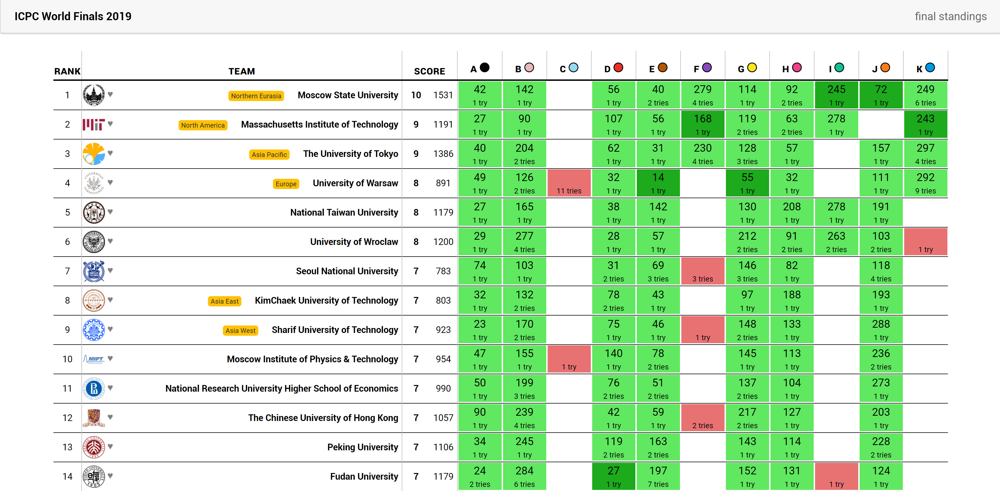

PROGRAMACIÓN COMPETITIVA
ISAAC LOZANO OSORIO
Diviertete pensando, creando y resolviendo.
¿Qué son las competiciones de programación?
ACM ICPC 2019, Oporto, Portugal.
Son concursos donde se mide la capacidad de programación y algoritmia de los participantes. Los mas importantes son los concursos realizados por la ICPC (International Collegiate Programming Contest) asociada con la asociación ACM, que realiza anualmente alrededor del mundo (50000 estudiantes de 3000 universidades en 111 paises de los 6 continentes en unos 400 concursos de programación ).
Generalidades
- Grupos de máximo 3 personas.
- Conjuntos de entre 8 y 12 problemas.
- 5 horas de competencia.
- Cada equipo cuenta con un coach que puede ser profesor o estudiante.
- Gana el equipo que resuelve más problemas en menos tiempo.
¿En qué se programa?
Y actualmente en muchos concursos permiten

Puntuaciones
En un concurso de programación se califica la capacidad de resolver problemas correctamente, y la rapidez para hacerlo. La puntuación de un equipo consta de dos números: El número de problemas resueltos y la suma de los tiempos en minutos en los cuales se resolvió cada problema.
Cada solución incorrecta penalizará al equipo con 20 minutos adicionales (en algunos concursos Compile Error no penaliza).
Gana el equipo con más problemas resueltos en menos tiempo.
Clasificación World Finals 2019
Posibles respuestas al enviar un ejercicio
NO - WRONG ANSWER
NO - COMPILATION ERROR

NO - RUNTIME ERROR
NO - PRESENTATION ERROR
NO - TIME LIMITED EXCEEDED
YES - ACCEPTED
Juez de competiciones en vivo
Problemas
Clasificación

Beneficios
- Proyección académica y profesional.
- Competir con los mejores del pais.
- Retos y superación intelectual.
- Desarrollo de competencias como lógica de programación, análisis de problemas y optimización de código.
- Dominio de técnicas de diseño de algoritmos y estructuras de datos.
- Velocidad en el análisis, diseño e implementación de soluciones algorítmicas.
- Fortalecimiento del nivel de lectura y comprensión en inglés.
- Trabajo en equipo.
- Oportunidades laborales y de pasantias con grandes empresas como IBM, Intel, Google, Amazon, Facebook y demás.
- Viajes y experiencias.
¿Donde se puede entrenar?
ENTRENAMIENTOS VIRTUALES
ENTRENAMIENTOS VIRTUALES
Competiciones Oficiales
¿Cuales son los requisitos?
Southwestern Europe Regional Contest (SWERC)

World Finals
Temas de Estudio
- Introducción a la Programación Competitiva
- Estructuras de datos
- Matemática
- Grafos
- Manejo de Cadenas
- Algoritmos Voraces
- Programación Dinámica